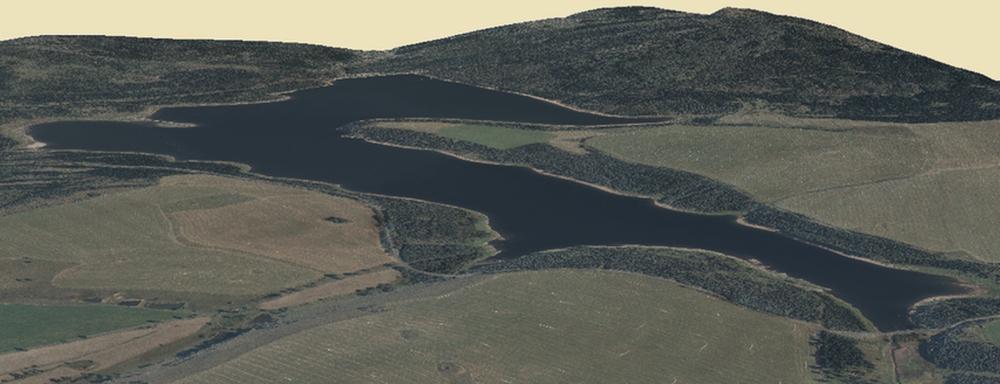

O Obci The town

|
| Oblast bývalé Přísečnice The region of former Pressnitz |
Obec Přísečnice, staré hornické město, se nacházelo v severozápadních Čechách v Krušných horách, v bývalém okrese Kodaň (v současné době okres Chomutov). Přibližné souřadnice středu bývalé obce jsou Y = 827 672 m, X = 988 271 m (S-JTSK). Přísečnice was an old mining town in North-West Bohemia in the Ore Mountains, in the former district of Kadaň (the district of Chomutov at present). The approximate coordinates of the centre of the town are Y = 827 672 m, X = 988 271 m (S-JTSK).
První písemná zmínka pochází z roku 1335. Přísečnice (německy Pressnitz) ležela na obchodní stezce ze Saska, mezi zalesněnými kopci nad stejnojmenným potokem. Rozvoj regionu byl ovlivněn těžbou železné rudy a stříbra, která však skončila v 18. století. The first written mention dates from 1335. Přísečnice (Pressnitz in German) lay on a trade route leading from Saxony, among wooded hills above the creek of the same name. The development of the region was shaped by the extraction of iron ore and silver, nevertheless, the mining finished in the 18th century.
V roce 1930 se v obci nacházelo asi 450 domů a 2600 obyvatel. Dominantou obce byl kostel Nanebevzetí Panny Marie s vysokou obdélníkovou věží, který se nacházel v jižní části obce. Dalšími významnými stavbami byly empírová radnice a barokní zámek na hlavním náměstí. K Přísečnici patřily také tři mlýny a pivovar. In 1930, there were about 450 houses and 2600 inhabitants. The dominant of the town was the church of the Assumption of the Virgin Mary with a tall rectangular tower, located in the southern part of the center. Other important structures were the Empire Town Hall and the Baroque Palace in the main square. Přísečnice also had three mills and a brewery.
Po vyhnání německých usedlíků po 2. světové válce nebyla Přísečnice plně dosídlena. V roce 1970 zde žilo pouhých 400 obyvatel ve 107 domech. V 70. letech bylo přijato rozhodnutí o úplné zničení obce z důvodu výstavby přehrady pro pitnou vodu. After the expulsion of the Germans after the 2nd World War, the town was not fully re-settled. In 1970, there lived about 400 people in 107 houses. In the nineteen seventies, a decision of a complete destruction of the town was adopted because of the construction of a dam for drinking water.
Text byl převzat z publikace Přísečnice - zatopená, ale nezapomenutá (Binterová, Děd, Müller; Chomutov; 2004) This text was taken from the publication Přísečnice flooded but not forgotten (Binterová, Děd, Müller, Chomutov, 2004)
|  |
| Přehrada (2.5D) The reservoir (2.5D) |